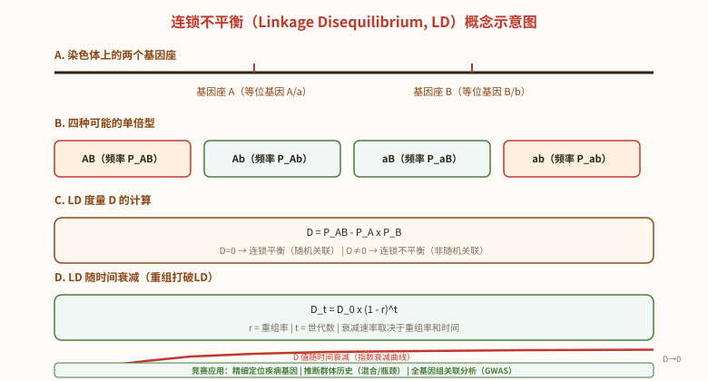

群体遗传学与进化遗传
一、Hardy-Weinberg定律
Hardy-Weinberg定律（遗传平衡定律）：在一个大的随机交配群体中，如果没有突变、选择、迁移和遗传漂变，则基因频率和基因型频率在世代间保持不变。由Hardy（英国数学家）和Weinberg（德国医生）于1908年独立提出。
对于一对等位基因A和a，频率分别为p和q（p+q=1）：
- 基因型频率：AA: Aa: aa = p² : 2pq : q²（p²+2pq+q²=1）
- 随机交配一代后群体即达到平衡。
Hardy-Weinberg平衡的五大条件：①群体足够大（无限大，无随机漂变）；②随机交配（无选型交配）；③无突变；④无迁移（基因流）；⑤无自然选择（所有基因型适合度相等）。违反任一条件都可能导致基因频率变化。
基因频率的计算方法：
- 常染色体共显性/不完全显性：可从表型频率直接计算基因频率（三种基因型均可区分）。如MN血型：p(M)=f(MM)+f(MN)/2。
- 常染色体完全显性：需假设群体处于HW平衡，从隐性纯合子频率推算。q²=f(aa)，q=√f(aa)，p=1-q。
- X连锁基因：雌性基因型频率与常染色体相同；雄性基因频率=表型频率（半合子）。平衡时雌雄基因频率相同，但达到平衡需多代（雌性p²/2pq/q²，雄性p/q）。
- 复等位基因：如ABO血型。设I^A=p，I^B=q，i=r，p+q+r=1。A型频率=p²+2pr，B型=q²+2qr，AB型=2pq，O型=r²。先求r=√O，再用其他方程联立求解p和q。

迁移（基因流）对基因频率的影响——计算例题：迁移是改变群体基因频率的重要因素之一。设迁入率为m，迁入群体的等位基因频率为q_m，本地群体的等位基因频率为q_0，则迁移后群体的等位基因频率为：
q₁ = (1 - m) · q₀ + m · q_m = q₀ + m(q_m - q₀)
例题：某岛屿上黑兔（隐性aa）频率为4%（q₀=0.2）。每年有10%的大陆兔迁入，大陆群体中黑兔频率为1%（q_m=0.1）。求迁移一代后岛屿群体的黑兔频率。
- q₀ = 0.2（岛屿），q_m = 0.1（大陆），m = 0.1
- q₁ = 0.2 + 0.1 × (0.1 - 0.2) = 0.2 - 0.01 = 0.19
- 迁移一代后黑兔频率 q₁² = 0.19² ≈ 3.61%
- 多代迁移后，岛屿群体频率将逐渐趋近大陆群体频率（q → q_m），这就是基因流的"均一化"效应。
二、近交与近交系数
近交（Inbreeding）：亲缘关系较近的个体之间的交配。近交增加纯合子频率，减少杂合子频率。
近交系数（F, Inbreeding Coefficient）：个体在某基因座上两个等位基因来自共同祖先同一拷贝的概率（0≤F≤1）。F=0→随机交配群体，F=1→完全近交。
在近交群体中，基因型频率变为：
- AA: p²+Fpq
- Aa: 2pq(1-F)
- aa: q²+Fpq
F=0时恢复为HW平衡频率。F=1时杂合子完全消失。
近交衰退（Inbreeding Depression）：近交导致有害隐性等位基因纯合化→适合度降低。在人类中表现为隐性遗传病发病率增加。
三、进化因素
遗传漂变（Genetic Drift）：由于随机抽样误差导致小群体中基因频率的随机波动。漂变效应在群体越小越显著。
- 瓶颈效应（Bottleneck Effect）：群体大小急剧减少→基因频率随机改变→遗传多样性丧失。如北方象海豹因19世纪捕猎几乎灭绝，现存群体遗传多样性极低。
- 奠基者效应（Founder Effect）：少数个体建立新群体→新群体基因频率与源群体有随机差异。如Amish人群中Ellis-van Creveld综合征（多指侏儒症）频率高→因创始成员携带致病等位基因。
基因流（Gene Flow）：个体迁移导致群体间基因交流。基因流使群体间基因频率趋于均一化，对抗遗传漂变和自然选择导致的群体分化。
自然选择（Natural Selection）：
- 适合度（Fitness, w）：基因型在给定环境中的相对繁殖成功率。最适基因型w=1，其他基因型w<1。
- 选择系数（Selection Coefficient, s）：s=1-w。s=0→无选择，s=1→致死。
- 突变-选择平衡：有害等位基因频率由突变率（μ）和选择系数（s）的平衡决定。对于隐性致死：q_equil = √(μ/s)。对于显性致死：p_equil = μ/s。
四、中性学说与分子钟
中性学说（Neutral Theory of Molecular Evolution）由木村资生（Motoo Kimura）于1968年提出。核心观点：
- 分子水平上大多数突变是中性的（不影响适合度），进化主要由中性突变的随机漂变驱动，而非自然选择。
- 中性突变率（μ）在不同物种中相对恒定→氨基酸或核苷酸替代速率恒定。
- 中性学说并不否认自然选择在表型进化中的作用，但认为分子水平的多数变异是中性或近中性的。
分子钟（Molecular Clock）：基于中性学说，氨基酸或核苷酸替代速率在进化时间尺度上相对恒定→可用于估算物种分化时间。不同基因的分子钟速率不同（如组蛋白基因极慢，纤维蛋白肽基因极快），需选择适合的基因进行特定时间尺度的分析。
五、本节核心总结
六、自然选择模型与物种形成
自然选择的基本模型：
- 定向选择（Directional Selection）：选择有利于某一极端表型→群体均值向该方向移动。如工业黑化（桦尺蛾Biston betularia，Kettlewell经典研究）。
- 稳定化选择（Stabilizing Selection）：选择有利于中间表型→群体方差减小。如人类新生儿体重（过大和过小均不利于生存）。
- 分裂化选择（Disruptive Selection）：选择有利于两个极端表型→可能导致多态性维持或物种形成。如非洲裂谷湖泊中慈鲷鱼的摄食形态分化。
- 平衡选择（Balancing Selection）：维持群体中的遗传多样性。包括杂合子优势（如Hb^A Hb^S抗疟疾）、频率依赖选择（稀有基因型优势，如自交不亲和S等位基因）。
物种形成（Speciation）：
- 异域物种形成（Allopatric Speciation）：地理隔离→基因流中断→分别进化→生殖隔离。最常见的物种形成模式。
- 同域物种形成（Sympatric Speciation）：无地理隔离的物种形成。如多倍化（植物中常见）、栖息地分化、性选择等。多倍体植物：异源多倍体（如小麦Triticum aestivum，AABBDD六倍体）和同源多倍体（如马铃薯）。
- 邻域物种形成（Parapatric Speciation）：相邻群体在渐变环境中的物种形成，基因流有限但未完全中断。
生殖隔离机制：
- 合子前隔离（Prezygotic）：生态隔离（栖息地隔离）、时间隔离（花期/繁殖季节不同）、行为隔离（求偶信号不匹配）、机械隔离（生殖器官不匹配）、配子隔离（配子不亲和）。
- 合子后隔离（Postzygotic）：杂种不活、杂种不育（如骡子，马×驴→骡，63条染色体，减数分裂不能正常进行）、杂种衰败（F₂代适合度降低）。
七、分子进化与系统发育学
分子进化速率：
- 非同义替代率（dN/dS，ω）：dN（非同义替代率/non-synonymous substitution rate）与dS（同义替代率/synonymous substitution rate）的比值。ω=1→中性进化；ω<1→纯化选择（purifying selection，负选择）；ω>1→正选择（positive selection，适应性进化）。
- dN/dS分析是检测自然选择在分子水平上的作用的标准方法。大多数基因的ω<1（纯化选择约束蛋白质功能），少数基因的ω>1（如免疫系统基因、生殖相关基因，受正选择驱动快速进化）。
系统发育树的构建方法：
- 距离法（Distance-based Methods）：NJ法（Neighbor-Joining，邻接法）——计算序列间遗传距离矩阵，迭代寻找最小进化距离的邻居。计算速度快，但信息利用不充分。
- 最大简约法（Maximum Parsimony, MP）：寻找需要最少进化变化（替代）次数的树。奥卡姆剃刀原则。
- 最大似然法（Maximum Likelihood, ML）：基于进化模型（如GTR+Γ模型），计算给定树产生观察数据的似然值，选择似然值最大的树。统计基础最坚实，但计算量大。
- 贝叶斯法（Bayesian Inference）：结合先验概率和似然函数，计算树的后验概率分布。MCMC（马尔可夫链蒙特卡洛）算法采样。
分子钟与人类进化：
- 线粒体夏娃假说（Mitochondrial Eve）：所有现代人类的线粒体DNA起源于约15-20万年前生活在非洲的一位女性（"线粒体夏娃"）。支持人类"走出非洲"（Out of Africa）假说。
- Y染色体亚当：所有现代男性的Y染色体起源于约20-30万年前的一位非洲男性。注意：线粒体夏娃和Y染色体亚当并非同时代的"一对夫妇"，而是各自谱系回溯的最晚共同祖先。
- 古DNA研究：尼安德特人（Neanderthal）和丹尼索瓦人（Denisovan）基因组测序→现代非洲以外人类含~1-4%尼安德特人DNA成分→现代人类祖先与尼安德特人有过杂交。
八、进化基因组学与适应性进化
适应性进化的分子机制：
- 基因重复（Gene Duplication）：不等交换（unequal crossing-over）→串联重复；逆转录转座→无内含子重复基因（retrogene）；全基因组重复（WGD, Whole Genome Duplication）。重复基因的命运：①新功能化（neofunctionalization）→获得新功能；②亚功能化（subfunctionalization）→祖先功能在两个拷贝间分配；③假基因化（pseudogenization）→功能丧失。
- 外显子重排（Exon Shuffling）：通过重组将不同基因的外显子组合→产生新蛋白质结构域组合。外显子边界与蛋白质结构域边界吻合→支持外显子重排假说。
- 水平基因转移（Horizontal Gene Transfer, HGT）：原核生物中普遍，真核生物中较少但确实存在。如细菌抗生素耐药基因的传播、Bt毒素基因从细菌到线虫的转移。
进化发育生物学（Evo-Devo）：
- 同源异型基因的保守性：Hox基因簇在所有两侧对称动物中高度保守→控制身体前后轴图式。果蝇与小鼠的Hox基因在染色体上的排列顺序和功能高度相似→表明600百万年前共同祖先已具有Hox基因簇。
- 进化中的顺式调控变化：形态进化主要由基因调控序列（增强子等）的变化而非蛋白质编码序列的变化驱动。经典例子：棘鱼（stickleback）的骨盆鳍退化→Pitx1基因的增强子缺失（而非Pitx1编码序列突变）。
- 深同源性（Deep Homology）：不同动物门类中控制类似结构的基因网络具有古老的共同起源。如Pax6基因控制眼睛发育（从果蝇复眼到人类眼睛），Distal-less控制附肢发育。
现代人类进化：
- 乳糖耐受性（Lactase Persistence）进化：LCT基因上游增强子突变（-13910*T），使乳糖酶在成年后持续表达。与畜牧业起源共进化，是近期人类适应性进化的经典范例。欧洲人群中频率~70-90%，东亚人群中频率低。
- 高海拔适应：藏族人EPAS1/HIF2A基因变异→降低血红蛋白水平→避免高原红细胞增多症。EPAS1变异源自丹尼索瓦人基因渗入（introgression）→古人类基因对现代人类适应的贡献。
九、进化理论的发展与争议
现代综合进化论（Modern Synthesis / Neo-Darwinism）：20世纪30-50年代，将达尔文自然选择理论与孟德尔遗传学、群体遗传学整合。核心人物：Fisher、Haldane、Wright（群体遗传学）、Dobzhansky（实验群体遗传学）、Mayr（物种概念）、Simpson（古生物学）。
现代综合进化论的核心观点：①进化是群体中基因频率的变化；②自然选择是进化的主要驱动力；③微进化（群体内）和宏进化（物种以上）是同一过程的连续体；④渐变性（gradualism）：进化主要通过小突变的积累。
对现代综合进化论的挑战与扩展：
- 中性学说（Kimura 1968）：分子水平上大多数突变是中性或近中性的，随机漂变而非自然选择是分子进化的主要驱动力。与选择论（selectionist）的争论仍在继续。
- 间断平衡理论（Punctuated Equilibrium）：Eldredge和Gould 1972年提出。物种在长期内形态稳定（停滞），被短暂的快速形态变化（成种事件）打断。挑战了渐变论。
- Evo-Devo（进化发育生物学）：强调发育调控基因（如Hox基因）的变化在形态进化中的关键作用。顺式调控序列的变化可能是形态进化的主要驱动力。
- 表观遗传（Epigenetic Inheritance）：跨代表观遗传（transgenerational epigenetic inheritance）→环境诱导的表观遗传变化可遗传给后代→可能提供非DNA序列的遗传变异来源。在植物中较常见，在哺乳动物中证据有限。
- 扩展进化综合论（Extended Evolutionary Synthesis, EES）：整合发育可塑性、生态位构建、包容性遗传（inclusive inheritance，包括表观遗传和文化遗传）等概念，扩展现代综合进化论。
七、进化理论与分子进化
现代进化综合理论（Modern Synthesis）：又称新达尔文主义（Neo-Darwinism），将达尔文自然选择理论与孟德尔遗传学、群体遗传学相结合。核心观点：
- 进化的四大驱动力：①突变→遗传变异的最终来源；②自然选择→适应性进化的主要驱动力；③遗传漂变→小群体中随机等位基因频率变化；④基因流→群体间基因交流。
- 选择的类型：定向选择（directional）→平均表型向一个方向移动；稳定选择（stabilizing）→极端表型被淘汰→平均值不变，方差减小；分裂选择（disruptive/diversifying）→中间表型被淘汰→可能导致物种分化。人类出生体重→稳定选择→过轻/过重婴儿死亡率高。
- 平衡选择（Balancing Selection）：维持遗传多态性的选择。杂合子优势（heterozygote advantage）→镰刀型细胞贫血→HbS杂合子（HbA/HbS）→抗疟疾→疟疾流行区HbS等位基因频率高。频率依赖选择（frequency-dependent selection）→稀有表型有优势→维持多态性。
Hardy-Weinberg应用与亲缘系数：
- Hardy-Weinberg平衡检验：χ²检验→比较观察基因型频率和期望频率→P<0.05→偏离HWE。偏离HWE的可能原因：非随机交配、群体分层（Wahlund效应）、自然选择、基因流、遗传漂变、基因分型错误。
- Wahlund效应：多个亚群体各自满足HWE但等位基因频率不同→合并后杂合子频率低于Hardy-Weinberg预期→Wahlund方差。
- 亲缘系数（Coefficient of Relationship, r）：两个个体共享来自共同祖先的等位基因的概率。亲子/全同胞→r=0.5；半同胞/祖孙→r=0.25；堂表兄妹→r=0.125。r=2×(1/2)^n（n为世代间隔数）。近交系数F=后代成为纯合子的概率增加，F=1/2N（理想群体中）。
- 连锁不平衡（LD, Linkage Disequilibrium）：两个基因座等位基因的非随机关联。D=P_AB-P_A·P_B。D随时间衰减：D_t = D₀(1-r)^t（r为重组率，t为世代数）。LD用于精细定位疾病基因、推断群体历史（混合/瓶颈）。

分子进化与系统发育：
- 中性学说（Neutral Theory, Kimura 1968）：大多数分子水平的进化变化不是由自然选择驱动，而是由中性突变的随机遗传漂变固定。核心预测：①分子进化速率恒定（分子钟）；②功能约束越强的序列进化越慢（非同义替代率<同义替代率）；③多态性与种间分歧相关。
- 分子钟（Molecular Clock）：给定基因或蛋白质的氨基酸/核苷酸替代速率大致恒定。应用：估算物种分化时间。校准：化石记录提供绝对时间。局限性：不同谱系速率可能不同，需要放宽假设（松弛分子钟，relaxed clock）。
- 系统发育树构建：距离法（NJ, neighbor-joining）/最大简约法（MP, maximum parsimony）/最大似然法（ML, maximum likelihood）/贝叶斯法（Bayesian）。bootstrap值→评估分支可靠性（>70%可靠）。外群（outgroup）→确定根的位置。
- dN/dS比值（ω）：非同义替代率（dN）与同义替代率（dS）之比。ω<1→纯化选择（负选择）；ω=1→中性进化；ω>1→正选择（分子适应）。
Hardy-Weinberg平衡在性连锁（X连锁）基因中的应用（竞赛高频）
X连锁基因的H-W平衡特点：
- 雌雄基因频率差异：雌性有2条X染色体（AA, Aa, aa三种基因型），雄性仅1条X染色体（A, a两种半合子基因型）。因此雌性基因频率p_f、q_f与雄性基因频率p_m、q_m可能不同。
- 平衡过程：①雌雄基因频率不同时，下一代雌性基因频率 = (p_f + p_m)/2（雌性从父母各获一条X）；②雄性基因频率 = p_f（雄性X来自母亲）；③经过多代随机交配，雌雄基因频率逐渐趋同，最终达到平衡。
- 平衡时：p_f = p_m = p（雌雄基因频率相等）。平衡基因型频率：雌性AA=p², Aa=2pq, aa=q²；雄性A=p, a=q。
- X连锁隐性遗传病发病率：男性患病率=q，女性患病率=q²。由于q<1，q²
竞赛计算技巧：
- 人群总患病率：X连锁隐性病总患病率 = (1/2)q² + (1/2)q（假设男女比例1:1）。当q较小时，总患病率≈q/2。
- 女性携带者频率 = 2pq。在非患病女性中，携带者比例 = 2pq/(1-q²) = 2pq/(p²+2pq) = 2q/(p+2q)。当q较小时，≈2q/p≈2q。
- X连锁显性遗传病：女性患病率=p²+2pq（有A即患病），男性患病率=p。女性患者多于男性（p²+2pq > p）。
复合群体的基因频率计算（迁移/混合群体）
迁移（Gene Flow）对基因频率的影响：
- 单向迁移模型：假设受体群体（recipient）每代从供体群体（donor）接收比例为m的迁移个体。则受体群体基因频率变化：Δp = m(p_donor - p_recipient)。即每代基因频率变化等于迁移率乘以两个群体基因频率之差。
- 混合群体（Admixture）：两个群体一次性混合，混合后基因频率 = f·p₁ + (1-f)·p₂，其中f为群体1在混合群体中所占比例。
复合群体基因频率计算真题示例：
- 经典题型：某群体有1000个个体，基因型频率为BB=250, Bb=500, bb=250（p=0.5, q=0.5）。迁入1000个bb个体后，群体总数为2000。求迁入后的基因频率。
- 解法：迁入后B基因频率 = (250×2 + 500×1)/(2000×2) = 1000/4000 = 0.25。b基因频率 = 1 - 0.25 = 0.75。即迁入导致b基因频率从0.5上升到0.75。
- 验证：直接计算迁入后的基因型数：BB=250, Bb=500, bb=250+1000=1250。B频率 = (250×2+500)/(2000×2) = 1000/4000 = 0.25。正确。
迁移-漂变平衡：
- 在岛屿模型中，迁移（m）和遗传漂变（1/2N）共同作用，群体间基因分化程度：F_ST ≈ 1/(1+4Nm)。当Nm>1时，迁移足以阻止漂变导致的分化；当Nm<1时，漂变将导致显著分化。
选择压力下的等位基因频率变化（竞赛计算精讲）
不同选择模式下的基因频率变化速率：
- 对隐性纯合子的选择（最常见）：w(AA)=1, w(Aa)=1, w(aa)=1-s。选择一代后：q' = q(1-sq)/(1-sq²)。当q很小时，Δq ≈ -sq²(1-q)，即隐性有害基因频率变化极慢——因为大多数有害等位基因"隐藏"在杂合子中不受选择。
- 对显性等位基因的选择：w(AA)=1-s, w(Aa)=1-s, w(aa)=1。选择一代后A的频率急剧下降，因为杂合子也受选择。显性有害基因能被快速清除。
- 杂合子优势（超显性）：w(AA)=1-s₁, w(Aa)=1, w(aa)=1-s₂。平衡时q_eq = s₁/(s₁+s₂)。这是镰状细胞贫血在疟疾区维持多态性的机制。
突变-选择平衡下的基因频率：
- 隐性有害基因：q_eq = √(μ/s)，其中μ为突变率（A→a），s为选择系数。例如：μ=10⁻⁶, s=0.7→q_eq≈0.0012。
- 显性有害基因：q_eq = μ/s。由于显性基因被高效清除，平衡频率远低于隐性基因。
- 竞赛要点：隐性致病基因因杂合子"隐蔽"而难以被自然选择完全清除——这是隐性遗传病在群体中持续存在的根本原因。即使选择压力消失，隐性有害基因也不会完全消失（突变持续产生新拷贝）。
X染色体上正选择基因比例更高的原因（竞赛真题）：
- 在灵长类、啮齿类和果蝇等多个具有XY性染色体的类群中，X染色体上受正选择的基因比例显著高于常染色体。原因：绝大部分突变是隐性的，在雄性（半合子）中突变直接暴露于自然选择，因此X染色体上的隐性有利突变能更快被选择固定。
必背考点汇总
- Hardy-Weinberg定律：p²+2pq+q²=1，五大条件（大群体/随机交配/无突变/无迁移/无选择）
- 基因频率计算：常染色体（完全显性q=√aa）、X连锁、ABO血型（r=√O）
- 近交系数F：AA=p²+Fpq，Aa=2pq(1-F)，近交通径分析
- 遗传漂变：瓶颈效应、奠基者效应
- 自然选择：适合度w、选择系数s=1-w、突变-选择平衡
- 中性学说：Kimura 1968，分子水平多数突变中性，漂变驱动
- 分子钟：替代速率恒定→估算分化时间
- X连锁H-W：男患病率=q，女=q²，平衡时p_f=p_m
- 选择压力：隐性Δq≈-sq²(1-q)慢，显性快，杂合优势q_eq=s₁/(s₁+s₂)
- 迁移：Δp=m(p_donor-p_recipient)，F_ST≈1/(1+4Nm)
高中教材衔接 · 课标对应
人教版选择性必修3第3章"生物进化"——现代生物进化理论、哈代-温伯格定律、种群基因频率、突变和基因重组、自然选择、隔离与物种形成、共同进化、生物多样性。具体到小节：选择性必修3第3章第1节"现代生物进化理论的由来"——拉马克、达尔文、现代综合论；第3章第2节"种群基因频率的变化"——哈代-温伯格定律、影响基因频率的因素（突变、选择、迁移、漂变）；第3章第3节"物种的形成"——隔离机制、物种形成方式；第3章第4节"协同进化与生物多样性的形成"。
2025 / 2026 联赛 · 初赛真题链接
本章重难点深度解析
重难点 1：Hardy-Weinberg 定律的精细计算与扩展
- H-W 定律的数学推导：① 一对等位基因 A（频率 p）和 a（频率 q），p + q = 1；② 随机交配 → 配子随机结合 → 后代基因型频率为 (pA + qa)² = p²AA + 2pqAa + q²aa；③ 平衡条件：各基因型的相对适合度相等（wAA = wAa = waa = 1），无突变、漂变、迁移、选择；④ H-W 平衡是"中性平衡"——一旦建立就能保持，类似于热力学平衡。
- 卡方检验 H-W 平衡：① 观察基因型数 (n_AA, n_Aa, n_aa) 和期望数 (Np², 2Npq, Nq²)；② χ² = Σ (O-E)²/E；③ df = 类别数 - 1 - 估计参数数 = 1（如果仅估计 p, q 但用经验频率则 df = 0，需用 Yates 校正）；④ χ²_0.05, 1 = 3.84，χ²_0.01, 1 = 6.63；⑤ 若 χ² > 临界值，则偏离 H-W 平衡，可能有选择、漂变、迁移、近交等作用。
- X 连锁基因的 H-W 平衡：① ♀ 有 2 条 X（AA, Aa, aa 三种基因型），♂ 有 1 条 X（AY, aY 两种基因型）；② ♀ 配子中 X^A 的频率 = p♀，X^a = q♀；③ ♂ 配子中 X^A 频率 = p♂，X^a = q♂（X^aY 直接表现为 a 雄性）；④ 平衡时 p♀ = p♂（♂ 的 X 染色体直接决定表型，与♀的 X 平均频率相等）；⑤ 平衡基因型频率：♀ AA = p²，♀ Aa = 2pq，♀ aa = q²；♂ AY = p，♂ aY = q。⑥ 总表型频率（X 连锁隐性）—— 患病♀ = q²，患病♂ = q；总表型 = q² + q = q(q+1)。
- 复等位基因的 H-W 平衡：① ABO 血型（3 个等位基因 I^A, I^B, i），频率 p, q, r（p+q+r=1）；② 基因型频率：A 型（I^A I^A + I^A i）= p² + 2pr；B 型（I^B I^B + I^B i）= q² + 2qr；AB 型（I^A I^B）= 2pq；O 型（ii）= r²；③ 总和 = (p+q+r)² = 1；④ 反推等位基因频率：r = √(O 型频率) ≈ 1 - √(A + O) - √(B + O) + √(O)？实际：p = 1 - √(B + O)，q = 1 - √(A + O)，r = √(O)；⑤ 检验 H-W：实际表型比 vs 期望（使用上述公式计算 p, q, r 后代回期望值）—— Bernstein 检验。
重难点 2：影响 H-W 平衡的因素——突变、选择、漂变、迁移、近交
- 突变（mutation）：① A → a 正向突变率 u，a → A 反向突变率 v；② 一个世代频率变化 Δq = up - vq；③ 平衡时 Δq = 0 → q = u/(u+v)，p = v/(u+v)；④ 现实意义：突变率极低（~10⁻⁶/基因/代），单独突变改变基因频率非常慢；⑤ 但突变是所有遗传变异的最终来源（"突变为进化提供原材料"）。
- 自然选择（natural selection）：① 适合度（fitness, w）—— 个体存活并繁殖后代的相对能力；② 选择系数（selection coefficient, s）—— s = 1 - w（w=1 时 s=0，无选择；w=0 时 s=1，完全致死）；③ 选择模式：① 隐性致病（s>0）：wAA = 1, wAa = 1, waa = 1-s；② 显性致病（s>0）：wAA = 1-s, wAa = 1-s, waa = 1；③ 杂合子优势（overdominance）：wAA = 1-s₁, wAa = 1, waa = 1-s₂；平衡时 q = s₁/(s₁+s₂)；④ 杂合子劣势（underdominance）：wAA = 1, wAa = 1-s, waa = 1。
- 突变-选择平衡：① 隐性致病基因在选择（消除 aa）+ 突变（产生 a）共同作用下达到平衡 q_eq = √(μ/s)，其中 μ = 突变率（A→a），s = 选择系数；② 例：① 苯丙酮尿症 PKU，s ≈ 0.7（不治疗），μ ≈ 10⁻⁶ → q_eq = √(10⁻⁶/0.7) ≈ 0.0012；② 实际 PKU 频率约 1/10,000 = 0.0001，与计算相近。③ 显性致病基因：q_eq = μ/s，纯合子显性更严重（s ≈ 1）则 q_eq = μ；④ 隐性致病基因因杂合子"隐蔽"难以清除——这是隐性遗传病在群体中持续存在的主要原因。
- 遗传漂变（genetic drift）：① 种群越小，漂变越强（等位基因频率随机波动）；② 数学：每代等位基因频率方差 σ² = pq/(2N)，N 为有效种群大小；③ 漂变的极端形式：① 奠基者效应（founder effect）—— 少数个体建立新种群（如澳洲绿虎蛇 ~100 创始个体）；② 瓶颈效应（bottleneck effect）—— 种群骤减后少数个体恢复（如猎豹 ~10,000 年前瓶颈期导致几乎所有个体 MHC 基因相同）；③ 中性等位基因固定概率 = 1/(2N)，固定时间 ≈ 4N 代；④ 漂变是 Kimura 中性进化理论的核心机制。
- 近交（inbreeding）：① 近交系数 F（inbreeding coefficient）—— 个体两等位基因同源的概率（来自共同祖先）；② 计算：F = Σ (1/2)^(n+1) × (1+F_A)，A 为共同祖先，n = 路径代数；③ 近交使杂合子频率下降（2pq → 2pq(1-F)），纯合子增加；④ 自交（F=0.5）的植物和动物：连续自交 → 杂合度 1/2 每代减半 → 逐渐纯合；⑤ 兄妹交（F=0.25）—— 杂合度每代减少 1/4；⑥ 哈代-温伯格定律的"非随机交配"违反主要通过近交实现，但近交不改变等位基因频率 p, q，只改变基因型频率。
重难点 3：分子进化与中性理论
- 中性进化理论（Neutral Theory of Molecular Evolution，Kimura 1983）：① 核心：分子水平上大多数突变是中性的（对适合度无影响），它们的命运由随机遗传漂变决定；② 预测：① 分子进化速率 = 中性突变率（与种群大小无关，因为漂变速率与中性突变率乘积为常数）；② 功能约束强的基因/位点进化慢（如组蛋白 H4 极保守）；③ 功能约束弱的基因/位点进化快（如假基因、非编码 DNA）；④ 与表型进化的"自然选择"模式不同——表型进化受选择驱动（适应性），分子进化"近似"中性。
- 分子钟（molecular clock）：① Zuckerkandl & Pauling 1965 提出——核苷酸置换速率近似恒定，可用于推断物种分歧时间；② 应用：① 物种分歧时间推断（人-黑猩猩 ~6 Mya、人-大猩猩 ~9 Mya、人-长臂猿 ~15 Mya、人-旧世界猴 ~25 Mya）；② 病毒演化速率（HIV 演化速率 ~10⁻³/bp/年，流感 ~10⁻⁵/bp/年）；③ 古老的分歧事件（如哺乳动物适应辐射 ~65 Mya）；③ 限制：① 速率"近似"恒定而非"完全"恒定（不同谱系速率不同，rRNA 比 mtDNA 慢）；② 需用化石记录校准（calibration points）。
- dN/dS（Ka/Ks）分析：① dN = 非同义置换率（non-synonymous，氨基酸改变）；② dS = 同义置换率（synonymous，氨基酸不变）；③ 比值：dN/dS > 1 正选择（适应性进化，如 MHC 抗原结合域进化快）；= 1 中性（漂变主导）；< 1 纯化（功能约束，如组蛋白）；④ 应用：① 识别正选择基因（如病原体表面蛋白、凝血因子、嗅觉受体）；② 检验功能约束（如看家基因 dN/dS 极低）；③ 不同物种比较（同源基因在不同谱系的进化速率差异）。
- 系统发育推断方法：① 距离法：UPGMA（假设分子钟，O(n³) 复杂度）、Neighbor-Joining（无分子钟假设，O(n³)）；② 离散法：最大简约（MP，找最少突变次数的树）、最大似然（ML，找概率最高的树，模型化核苷酸置换过程）、贝叶斯（BI，ML + 先验分布 + MCMC 采样）；③ 模型选择：Jukes-Cantor（JC69，所有置换等概率）、Kimura 2-parameter（K2P，转换≠颠换）、General Time Reversible（GTR，最一般可逆模型）；④ 置信度：自举（bootstrap，重抽样 100-1000 次）、贝叶斯后验概率。⑤ 工具：MEGA、PhyML、RAxML、MrBayes、BEAST、PAML（dN/dS 分析）。
重难点 4：物种形成与生物多样性
- 物种概念：① 生物学物种概念（Mayr 1942）—— 种群间存在生殖隔离，组内可相互交配并产生可育后代；② 形态学物种概念—— 表型差异（最常用但不准确）；③ 系统发育物种概念—— 共同的祖先谱系（系统树分支上的最小单系群）；④ 进化物种概念（Simpson 1951）—— 独立的进化谱系（自己的进化轨迹）；⑤ 生态物种概念—— 占据独特生态位（适应性）。生物竞赛最常考"生物学物种概念"。
- 隔离机制（reproductive isolating mechanisms, RIMs）：① 合子前隔离（prezygotic）：① 栖息地隔离（不同生境）；② 时间隔离（不同繁殖期）；③ 行为隔离（求偶仪式不同）；④ 机械隔离（生殖器不匹配）；⑤ 配子隔离（精卵不识别）。② 合子后隔离（postzygotic）：① 杂种无活力（hybrid inviability）；② 杂种不育（hybrid sterility，如骡子）；③ 杂种衰败（hybrid breakdown，F₂ 退化）。
- 物种形成模式：① 异域物种形成（allopatric）—— 地理隔离 → 不同选择压力 → 遗传分化 → 生殖隔离。例：岛屿生物（如达尔文雀）、加州红木种群；② 同域物种形成（sympatric）—— 无地理隔离下的物种形成，主要机制：① 多倍体（常见于植物，小麦 6x、栽培烟草 2x+1x、苹果 3x）；② 栖息地分化（不同微生境）；③ 性选择（不同求偶偏好）。③ 邻域物种形成（parapatric）—— 相邻种群分化（如草原与林地的草履虫群体）；④ 量子物种形成（quantum speciation）—— 染色体突变引起的快速物种形成（如澳洲鼠类）；⑤ 异源多倍体形成—— 普通小麦 (Triticum aestivum) = 异源六倍体 (AABBDD, 2n=42) = 乌拉尔图小麦(AA) + 拟斯卑尔脱山羊草(BB) + 节节麦(DD) 三个二倍体物种天然杂交 + 加倍形成。
- 生物多样性的形成与维持：① 物种多样性（species diversity）—— 物种数 + 分类多样性（taxonomic diversity）；② 遗传多样性（genetic diversity）—— 种内等位基因多样性（如栽培水稻 1 万多个品种）；③ 生态系统多样性（ecosystem diversity）—— 多种生态系统类型共存；④ 多样性形成机制：① 适应辐射（adaptive radiation）—— 单一祖先快速演化为多种新物种（如达尔文雀、夏威夷蜜旋木雀、非洲丽鱼）；② 协同进化（co-evolution）—— 物种相互影响共同进化（如传粉者-花、宿主-寄生虫）；③ 关键创新（key innovation）—— 新形态特征引发快速多样化（如四腔心、有胎盘的哺乳动物）；④ 多样性维持机制：① 生态位分化（niche partitioning）；② 竞争排斥原理（Gause 原理）；③ 岛屿生物地理学（MacArthur-Wilson 平衡理论：物种数 = 迁入率 - 灭绝率）；④ 保护区设计（SLOSS 辩论：single large or several small）。